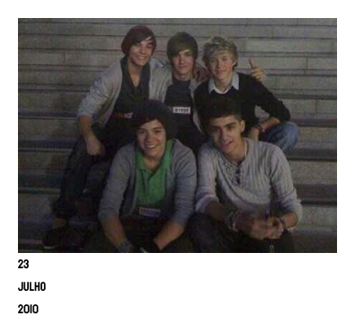
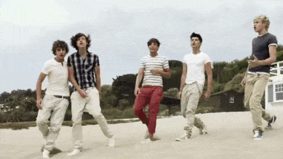
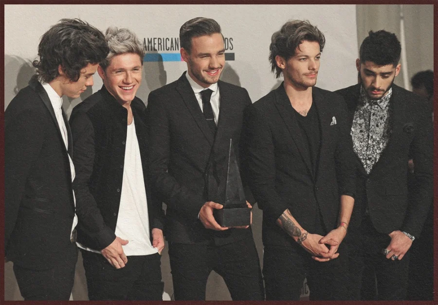
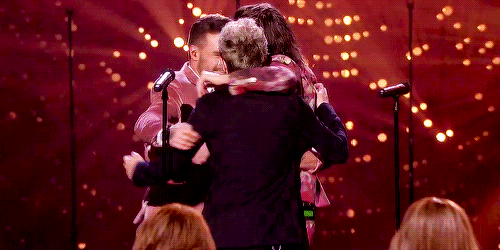

Integrantes Favoritos
Cadastre em ordem seus integrantes favoritos

PRIMEIRA FOTO DOS MENINOS TIRADA
APÓS A BANDA SER FORMADA
APÓS A BANDA SER FORMADA
PRIMEIRA PERFORMANCE DOS MENINOS
APÓS A BANDA SER FORMADA
APÓS A BANDA SER FORMADA


PRIMEIRO SINGLE QUE OS MENINOS LANÇARAM
VIDEO DIARIES E ÁLBUM "UP ALL NIGHT"
SE LEMBRE:
VASHAPPENING
KEVIN
SPIN THE HARRY
CLIQUE-->
SE LEMBRE:
VASHAPPENING
KEVIN
SPIN THE HARRY
CLIQUE-->


I LIKE GIRLS WHO EAT CARROTS
Louis Tomlinson uma vez disse.
Minha mãe deve agradecer ele,
depois disso passei a comer cenouras
Louis Tomlinson uma vez disse.
Minha mãe deve agradecer ele,
depois disso passei a comer cenouras
MORE THAN THIS
"If I'm louder, would you see me?
Would you lay down in my arms and rescue me?
'Cause we are the same
You save me
But when you leave, it's gone again"
"If I'm louder, would you see me?
Would you lay down in my arms and rescue me?
'Cause we are the same
You save me
But when you leave, it's gone again"


SEGUNDO ÁLBUM DE ESTÚDIO DOS MENINOS
'TAKE ME HOME'
2012
'TAKE ME HOME'
2012
SINGLE 'LITTLE THINGS'
ESCRITA POR: ED SHEERAN
'You can't go to bed
Without a cup of tea
And maybe that's the reason
That you talk in your sleep
And all those conversations
Are the secrets that I keep
Though it makes no sense to me'
Louis cantou sobre tomar chá antes de dormir
passei um longo período tomando chá antes de dormir
(camomila)
ESCRITA POR: ED SHEERAN
'You can't go to bed
Without a cup of tea
And maybe that's the reason
That you talk in your sleep
And all those conversations
Are the secrets that I keep
Though it makes no sense to me'
Louis cantou sobre tomar chá antes de dormir
passei um longo período tomando chá antes de dormir
(camomila)


'I want you to hit the pedal
heavy metal show me you care
I want you to rock me, rock me,
rock me, yeah'
heavy metal show me you care
I want you to rock me, rock me,
rock me, yeah'
ONE WAY OR ANOTHER (COVER ONE DIRECTION)
CLIPE FEITO PARA ARRECADAR FUNDOS PARA A
INSTITUIÇÃO COMIC RELIEF
CLIPE FEITO PARA ARRECADAR FUNDOS PARA A
INSTITUIÇÃO COMIC RELIEF


FRAT BOY ERA ONE DIRECTION
mais conhecida como a era que
quebra corações
(o meu pelo menos)
abençoado seja 2012-2013
mais conhecida como a era que
quebra corações
(o meu pelo menos)
abençoado seja 2012-2013
THIS IS US
FILME DOCUMENTÁRIO
MOMENTOS DE BACKSTAGE
FILME DOCUMENTÁRIO
MOMENTOS DE BACKSTAGE


1D DAY
LIVE INTERATIVA DE 7 HORAS
LANÇAMENTO DO ÁLBUM
'MIDNIGHT MEMORIES'
LIVE INTERATIVA DE 7 HORAS
LANÇAMENTO DO ÁLBUM
'MIDNIGHT MEMORIES'
OS MENINOS ESTAVAM MUITO ENVOLVIDOS
COM AS LETRAS NESSE ÁLBUM
A ONE DIRECTION ESTAVA CRIANDO
SUA IDENTIDADE
COM AS LETRAS NESSE ÁLBUM
A ONE DIRECTION ESTAVA CRIANDO
SUA IDENTIDADE


EM MIDNIGHT MEMORIES
TEMOS MUITAS MÚSICAS QUE
ELES ENTREGAM TUDO
MAS O MOMENTO DE RIGHT NOW EM SAN SIRO
ME FAZ PENSAR NO CARINHO E GRATIDÃO
QUE ELES TEM POR NÓS
TEMOS MUITAS MÚSICAS QUE
ELES ENTREGAM TUDO
MAS O MOMENTO DE RIGHT NOW EM SAN SIRO
ME FAZ PENSAR NO CARINHO E GRATIDÃO
QUE ELES TEM POR NÓS
SEGUNDO FILME DOCUMENTÁRIO
TEMOS TODOS OS MOMENTOS DE SAN SIRO NELE
TEMOS TODOS OS MOMENTOS DE SAN SIRO NELE


STEAL MY GIRL
EU FIQUEI POR MUITO TEMPO OBECECADA
NÃO VOU MENTIR
PRIMEIRO SINGLE DO 'FOUR'
NOVO ÁLBUM DOS MENINOS
EU FIQUEI POR MUITO TEMPO OBECECADA
NÃO VOU MENTIR
PRIMEIRO SINGLE DO 'FOUR'
NOVO ÁLBUM DOS MENINOS
QUARTO ÁLBUM DOS MENINOS
TEMOS O NÃO ESPERADO SINGLE 'NO CONTROL'
QUE JUNTAMENTE COM 'FOOLS GOLD' SÃO MINHAS FAVS
TEMOS O NÃO ESPERADO SINGLE 'NO CONTROL'
QUE JUNTAMENTE COM 'FOOLS GOLD' SÃO MINHAS FAVS


ÚLTIMA TOUR COM O ZAYN NA BANDA
ÚLTIMA TOUR ANTES DO HIATUS ETERNO DELES
OTRA TOUR FOI AVASSALADORA
ÚLTIMA TOUR ANTES DO HIATUS ETERNO DELES
OTRA TOUR FOI AVASSALADORA

ZAYN TE AMO MASSS
TINHA MESMO QUE SAIR DA BANDA NO DIA
DO MEU ANIVERSÁRIO
O TANTO QUE EU PASSEI MAL NESSE DIA.
MAS TUDO BEM, EU ERA NOVA DEMAIS
PARA ENTENDER
25/03/2015
TINHA MESMO QUE SAIR DA BANDA NO DIA
DO MEU ANIVERSÁRIO
O TANTO QUE EU PASSEI MAL NESSE DIA.
MAS TUDO BEM, EU ERA NOVA DEMAIS
PARA ENTENDER
25/03/2015

PRIMEIRA APARIÇÃO DA BANDA
SEM O ZAYN
'LATE LATE SHOW-JAMES CORDEN'
SEM O ZAYN
'LATE LATE SHOW-JAMES CORDEN'


PRIMEIRO ÁLBUM SEM O ZAYN
NÃO VOU ME APROFUNDAR
PARA MIM JÁ BASTA A FRASE
'SEM O ZAYN' PARA CHORAR
NÃO VOU ME APROFUNDAR
PARA MIM JÁ BASTA A FRASE
'SEM O ZAYN' PARA CHORAR
SEGUNDO OS FÃS ESSA MÚSICA
FOI BEASEADA EM UMA LIGAÇÃO
ENTRE O ZAYN E O HARRY
ALGUNS TRECHOS:
'Uma semana atrás, você me disse
Você acredita que eu nunca estarei muito longe?
Se você está perdida, apenas procure por mim
Você vai me encontrar na região das estrelas de verão
O fato que podemos sentar aqui e dizer adeus
Significa que nós já ganhamos
A necessidade de desculpas entre eu e você
Meu bem, não tem nenhuma'
FOI BEASEADA EM UMA LIGAÇÃO
ENTRE O ZAYN E O HARRY
ALGUNS TRECHOS:
'Uma semana atrás, você me disse
Você acredita que eu nunca estarei muito longe?
Se você está perdida, apenas procure por mim
Você vai me encontrar na região das estrelas de verão
O fato que podemos sentar aqui e dizer adeus
Significa que nós já ganhamos
A necessidade de desculpas entre eu e você
Meu bem, não tem nenhuma'


ÚLTIMO SINGLE DA BANDA
LOUIS E LIAM ESCREVERAM
SIGNIFICA MUITO PARA ELES
É UM ADEUS E UM RECONHECIMENTO
DE TUDO QUE PASSAMOS (BANDA E FÃ)
Porque a verdade é que eu percebi
Que sem você aqui, a vida é apenas uma mentira
Este não é o fim, este não é o fim
Nós podemos fazer isso, você sabe, você sabe
'Você e eu temos muita história
Nós poderíamos ser o melhor time que o mundo já viu
Você e eu temos muita história
Então não deixe isso ir, nós podemos fazer um pouco mais, podemos viver para sempre'
LOUIS E LIAM ESCREVERAM
SIGNIFICA MUITO PARA ELES
É UM ADEUS E UM RECONHECIMENTO
DE TUDO QUE PASSAMOS (BANDA E FÃ)
Porque a verdade é que eu percebi
Que sem você aqui, a vida é apenas uma mentira
Este não é o fim, este não é o fim
Nós podemos fazer isso, você sabe, você sabe
'Você e eu temos muita história
Nós poderíamos ser o melhor time que o mundo já viu
Você e eu temos muita história
Então não deixe isso ir, nós podemos fazer um pouco mais, podemos viver para sempre'
AQUI O MENINOS APRESENTARAM 'HISTORY' AO VIVO
RETORNARAM AO COMEÇO, PERFORMARAM NO PALCO DO X-FACTOR
ÚLTIMA APRESENTAÇÃO JUNTOS
E O ÚLTIMO ABRAÇO DELES COMO BANDA

RETORNARAM AO COMEÇO, PERFORMARAM NO PALCO DO X-FACTOR
ÚLTIMA APRESENTAÇÃO JUNTOS
E O ÚLTIMO ABRAÇO DELES COMO BANDA

'THIS IS NOT THE END'
ELES QUE DISSERAM
ÚLTIMO CLIPE DA BANDA
MÚSICA 'HISTORY'
ELES QUE DISSERAM
ÚLTIMO CLIPE DA BANDA
MÚSICA 'HISTORY'